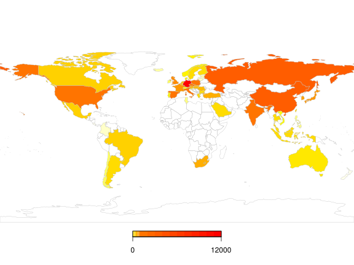

CO2 Example
CO2 productivity vs. carbon footprint
full_join(carbon.fp, green.growth, by=NULL) %>%
filter(year==1995|year==2011) %>%
ggplot(aes(x = CO2_PBPROD, y = co2.imports, color=OECD)) +
geom_point(size=5) +
geom_text_repel(aes(label=country), size = 3) +
geom_hline(yintercept = 0, color="darkred") +
labs(x = "CO2 Productivity (USD per Kg of CO2)",
y = "Net imports of embodied CO2 (Tonnes per capita)",
size = "Real GDP per capita", color = "") +
ggtitle("CO2 productivity vs. carbon footprint") +
theme_bw() +
scale_x_continuous(limits = c(0, 12),
breaks = seq(0, 12, by = 2)) +
scale_color_manual(limits = c(0,1),
values = c("deepskyblue4", "darkorange3"),
labels = c("Non-OECD country", "OECD country")) +
facet_wrap(~ year) +
theme(plot.title = element_text(hjust = 0.5, face="bold"))Material footprint
full_join(material, green.growth, by=NULL) %>%
filter(year==2010) %>%
## ggplot(aes(x = DMC_PROD, y = `Material Footprint of Imports per capita-RME_Imp per capita_Total`, color=OECD)) +
ggplot(aes(x = DMC_PROD, y = `Material.Footprint.of.Imports.per.capita.RME_Imp.per.capita_Total`, color=OECD)) +
geom_point(size=5) +
geom_text_repel(aes(label=country), size = 3) +
geom_hline(yintercept = 0, color="darkred") +
labs(x = "Non-energy material productivity (GDP per unit of DMC)", y = "Material footprint of imports (Tonnes per capita)",
size = "Real GDP per capita", color = "") +
ggtitle("Material productivity vs. material footprint (2010)") +
theme_bw() +
scale_y_continuous(limits = c(0, 35), breaks = seq(-10, 35, by = 10)) +
scale_color_manual(limits = c(0,1), values = c("deepskyblue4", "darkorange3"), labels = c("Non-OECD country", "OECD country")) +
theme(plot.title = element_text(hjust = 0.5, face="bold"))## "Material Footprint of Imports per capita (Biomass)-RME_Imp per capita_Biomass" %>%
## gsub("[ ()]", ".", txt) %>%
## gsub("\\-", ".", .)
shortlabels <- c(`Material.Footprint.of.Imports.per.capita..Biomass..RME_Imp.per.capita_Biomass` = "Biomass",
`Material.Footprint.of.Imports.per.capita..Fossil.Fuels..RME_Imp.per.capita_Fossil.fuels`= "Fossil fuels",
`Material.Footprint.of.Imports.per.capita..Metal.Ores..RME_Imp.per.capita_Metal.ores` = "Metal ores",
`Material.Footprint.of.Imports.per.capita..Non.Metal.Ores..RME_Imp.per.capita_Non.metallic.minerals` = "Non-metallic minerals")
full_join(material, green.growth, by=NULL) %>%
subset(select=c(country, year, DMC_PROD, GDP_RCAP, OECD,
`Material.Footprint.of.Imports.per.capita..Biomass..RME_Imp.per.capita_Biomass`,
`Material.Footprint.of.Imports.per.capita..Fossil.Fuels..RME_Imp.per.capita_Fossil.fuels`,
`Material.Footprint.of.Imports.per.capita..Metal.Ores..RME_Imp.per.capita_Metal.ores`,
`Material.Footprint.of.Imports.per.capita..Non.Metal.Ores..RME_Imp.per.capita_Non.metallic.minerals`)) %>%
gather(`material type`,MF,-c(country, year, OECD, DMC_PROD, GDP_RCAP)) %>%
filter(year==2010) %>%
ggplot(aes(x = DMC_PROD, y = `MF`, color=OECD)) +
geom_point(size=5) +
geom_text_repel(aes(label=country), size = 3) +
geom_hline(yintercept = 0, color="darkred") +
labs(x = "Non-energy material productivity (GDP per unit of DMC)", y = "Material footprint of imports (Tonnes per capita)",
size = "Real GDP per capita", color = "") +
ggtitle("Material productivity vs. material footprint (2010)") +
theme_bw() +
scale_y_continuous(limits = c(0, 20), breaks = seq(0, 20, by = 5)) +
scale_color_manual(limits = c(0,1), values = c("deepskyblue4", "darkorange3"), labels = c("Non-OECD country", "OECD country")) +
facet_wrap(~ `material type`, labeller=labeller(`material type` = shortlabels)) +
theme(plot.title = element_text(hjust = 0.5, face="bold"))Circular flows
# chordDiagram(x = co2.exports, transparency = 0.25,annotationTrackHeight = c(0.1, 0.1))
#
# chordDiagram(x = co2.exports, transparency = 0.25, directional = 1,
# direction.type = c("arrows", "diffHeight"), diffHeight = -0.03,
# annotationTrack = "grid", preAllocateTracks = 1,
# link.arr.type = "big.arrow", link.sort = TRUE, link.largest.ontop = TRUE)
chordDiagram(x = co2.exports, transparency = 0.25, annotationTrack = "grid", preAllocateTracks = 1,
link.sort = TRUE, link.largest.ontop = TRUE)
circos.trackPlotRegion(track.index = 1, panel.fun = function(x, y) {
xlim = get.cell.meta.data("xlim")
ylim = get.cell.meta.data("ylim")
sector.name = get.cell.meta.data("sector.index")
circos.text(mean(xlim), ylim[1] + .1, sector.name, facing = "clockwise", niceFacing = TRUE, adj = c(0, 0.5))
circos.axis(h = "top", labels.cex = 0.5, major.tick.percentage = 0.2, sector.index = sector.name, track.index = 2)
}, bg.border = NA)
chordDiagram(x = CO2.net.exports, transparency = 0.25, annotationTrack = "grid", preAllocateTracks = 1,
link.sort = TRUE, link.largest.ontop = TRUE)
circos.trackPlotRegion(track.index = 1, panel.fun = function(x, y) {
xlim = get.cell.meta.data("xlim")
ylim = get.cell.meta.data("ylim")
sector.name = get.cell.meta.data("sector.index")
circos.text(mean(xlim), ylim[1] + .1, sector.name, facing = "clockwise", niceFacing = TRUE, adj = c(0, 0.5))
circos.axis(h = "top", labels.cex = 0.5, major.tick.percentage = 0.2, sector.index = sector.name, track.index = 2)
}, bg.border = NA)
Maps
mapDevice("x11")
invisible(capture.output(
spdf <- joinCountryData2Map(foreign.co2.emissions, joinCode="ISO3", nameJoinColumn="country")
))
map1 <- mapCountryData(spdf, nameColumnToPlot="total.emissions",
catMethod = c(0,10,20,30,40,50,60,70,80,90,100,
200,300,400,500,600,700,800,900,1000,
2000,3000,4000,5000,6000,7000,8000,9000,
10000,11000,12000), addLegend=FALSE,
mapTitle="")
do.call(addMapLegend, c(map1, legendWidth=0.5, legendMar = 2.5, legendShrink=0.25))
mapDevice("x11")
invisible(capture.output(
spdf <- joinCountryData2Map(foreign.co2.emissions2, joinCode="ISO3", nameJoinColumn="country")
))
map2 <- mapCountryData(spdf, nameColumnToPlot="total.emissions",
catMethod = c(0,100,200,300,400,500,600,700,800,900,1000,
2000,3000,4000,5000,6000,7000,8000,9000,10000,
11000,12000,13000,14000,15000,16000,17000,18000,19000,
20000,30000,40000,50000,60000,70000,80000,90000,
100000,110000,120000,130000), addLegend=FALSE,
mapTitle="")
do.call(addMapLegend, c(map2, legendWidth=0.5, legendMar = 2.5, legendShrink=0.25))`